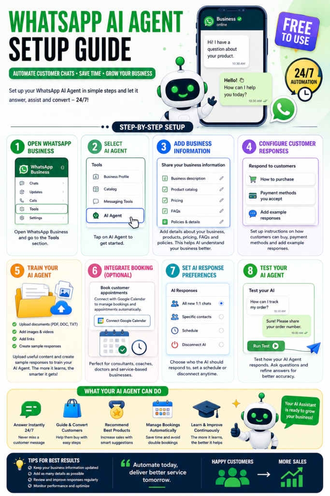

WhatsApp AI Agent
In today’s digital-first world, speed is everything. Customers expect instant replies, personalized interactions, and seamless communication—especially on platforms like WhatsApp, where conversations feel direct and personal.
But here’s the reality: most businesses are still stuck replying manually to every single message.
“Hi, what’s the price?”
“How can I order?”
“Do you offer delivery?”
If you’re running a business, you’ve probably answered these questions hundreds of times. And while it may seem manageable at first, manual replies quickly become overwhelming as your customer base grows.
This is where the WhatsApp AI Agent comes in—a powerful, free tool that is transforming how businesses communicate with customers.
Instead of typing replies all day, you can now automate conversations, guide customers, and even close sales—without being online 24/7.
In this complete guide, you’ll learn everything you need to know about WhatsApp AI Agent, how it works, and how you can use it to scale your business efficiently.
What is WhatsApp AI Agent?
WhatsApp AI Agent is a built-in automation feature within WhatsApp Business that allows businesses to handle customer interactions using artificial intelligence.
Think of it as a smart virtual assistant that:
- Responds instantly to customer queries
- Learns your business information
- Guides users through the buying process
- Handles bookings and appointments
- Provides consistent and accurate answers
Unlike traditional chatbots, this AI agent is more flexible, customizable, and easier to set up—no coding required.
It works directly inside WhatsApp, which means your customers don’t need to download anything new or learn a new platform.
The Problem with Manual Customer Replies
Before diving deeper into automation, let’s understand why manual replies are a problem.
Time-Consuming
Replying to each message individually takes hours every day. As your business grows, this becomes unsustainable.
Slow Response Time
Customers expect quick replies. Even a delay of a few minutes can result in lost opportunities.
Repetitive Work
Answering the same questions repeatedly wastes time and energy.
Limited Scalability
You can only handle a limited number of chats at once. Growth becomes difficult without hiring more staff.
Human Errors
Manual replies can lead to inconsistent information, missed messages, or incorrect details.
Clearly, manual communication is not built for modern business demands.
Key Features of WhatsApp AI Agent
24/7 Automated Responses
Your AI agent replies instantly and handles multiple conversations—even when you’re offline.
Smart Business Learning
It understands your product catalog, pricing, and FAQs to provide accurate responses.
Guided Purchase Experience
Automates buying instructions, payment methods, and customer guidance.
Product Recommendations
Suggests best-selling or relevant products to increase conversions.
Appointment Booking Integration
Connects with tools like Google Calendar to manage bookings automatically.
Custom Training & Knowledge Base
Upload documents, add links, and create sample responses to train your AI.
Flexible Control Options
Control when it responds, who it responds to, and disable anytime.
How to Set Up WhatsApp AI Agent
Step 1
Open WhatsApp Business and go to the Tools section.
Step 2
Select the AI Agent option.
Step 3
Add your business details, product info, and FAQs.
Step 4
Configure responses like “How to Buy” and payment methods.
Step 5
Train the AI with documents and sample replies.
Step 6
Integrate booking tools if needed.
Step 7
Test and refine responses.

Benefits of Using WhatsApp AI Agent
Faster response time improves customer satisfaction.
Increased sales through better engagement.
Reduced workload by automating repetitive tasks.
Better customer experience with consistent replies.
Smarter operations as AI improves over time.
Real-World Use Cases
E-commerce stores can handle product inquiries and boost sales.
Service providers can automate bookings.
Consultants can manage client communication.
Local businesses can respond instantly and grow faster.
Best Practices
Keep your data updated.
Use clear and simple responses.
Test regularly and improve performance.
Maintain a human-like tone.
Monitor results and optimize continuously.
Common Mistakes to Avoid
Not training the AI properly.
Providing incomplete information.
Ignoring testing and updates.
Over-automating without personalization.
The Future of Customer Communication
AI is no longer optional—it’s essential.
Businesses are shifting towards automation to save time, reduce costs, and improve efficiency.
WhatsApp AI Agent is just the beginning of this transformation.
Conclusion
Manual replies are slowing you down.
With WhatsApp AI Agent, you can automate conversations, improve response speed, increase sales, and scale effortlessly.
The shift to AI-powered communication is already happening.
The real question is: Are you ready to embrace it?
Frequently Asked Questions (FAQs)
1. What is WhatsApp AI Agent?
WhatsApp AI Agent is an automation feature in WhatsApp Business that allows businesses to automatically respond to customer messages, provide product information, and handle interactions using artificial intelligence.
2. Is WhatsApp AI Agent free to use?
Yes, WhatsApp AI Agent is currently available as a free feature inside WhatsApp Business, making it accessible for small and medium-sized businesses.
3. How does WhatsApp AI Agent work?
It works by using your business data such as product details, FAQs, and responses to automatically reply to customer queries in real-time without manual effort.
4. Can WhatsApp AI Agent replace human customer support?
While it can handle most common queries and automate responses, human support may still be needed for complex or sensitive customer issues.
5. How do I set up a WhatsApp AI Agent?
You can set it up by going to the Tools section in WhatsApp Business, selecting AI Agent, adding your business information, configuring responses, and training the AI with your data.
6. Can WhatsApp AI Agent increase sales?
Yes, by responding instantly, guiding customers through purchases, and recommending products, it can significantly improve conversion rates and boost sales.
7. Is coding required to use WhatsApp AI Agent?
No, WhatsApp AI Agent is designed for beginners and does not require any coding or technical skills to set up.
8. Can I customize the responses of WhatsApp AI Agent?
Yes, you can fully customize responses by adding sample replies, uploading documents, and setting instructions for how the AI should communicate.
9. Does WhatsApp AI Agent support appointment booking?
Yes, it can integrate with tools like Google Calendar to automatically manage bookings and appointments.
10. Is WhatsApp AI Agent suitable for small businesses?
Absolutely. It is especially beneficial for small businesses as it reduces workload, saves time, and improves customer communication without additional costs.
11. Can I turn off WhatsApp AI Agent anytime?
Yes, you can easily disable or disconnect the AI Agent whenever you want full manual control again.
12. What are the benefits of using WhatsApp AI automation?
The main benefits include faster response times, improved customer experience, reduced workload, increased efficiency, and higher sales potential.